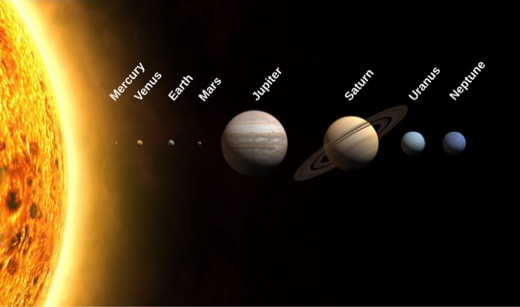

Pick a group first. Each group page has four choices, and each of those opens its own data page.


Step 1: choose a group
-
Inner Planets
These are the four rocky planets inside the asteroid belt.
-
Outer Planets
These four sit past the asteroid belt.
-
Dwarf Planets
Dwarf planets orbit the Sun and are round enough to be planet-like, but they have not cleared their orbits.
-
Notable Moons
These are moons, not planets.